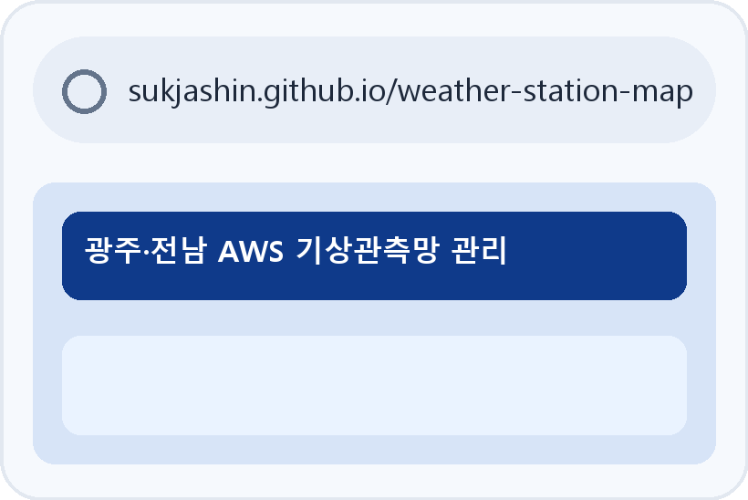
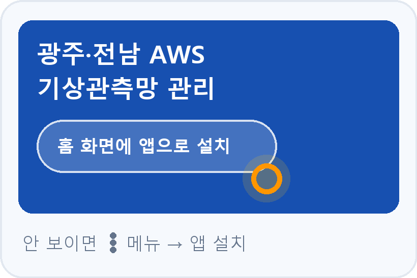
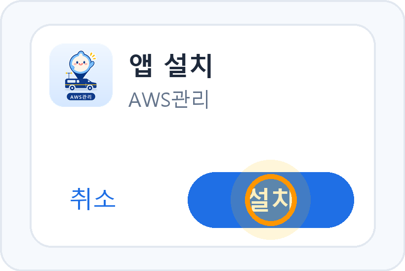
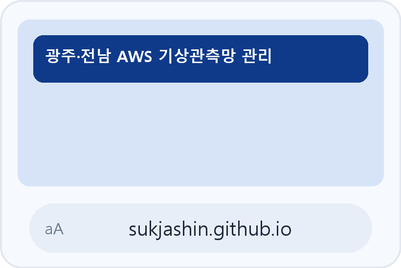
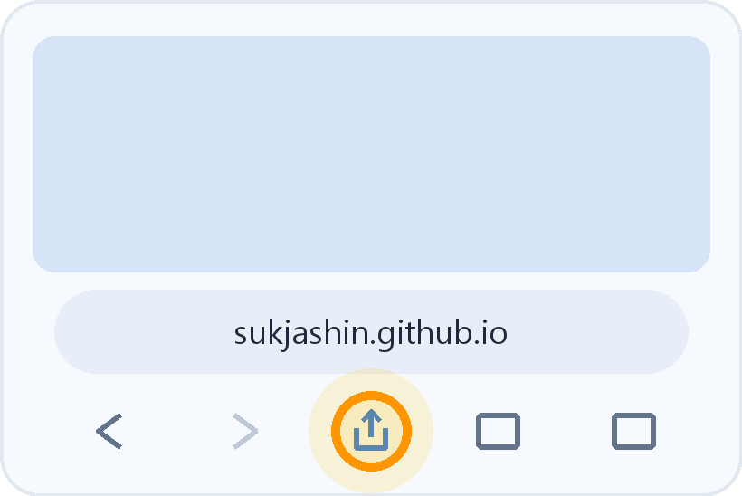
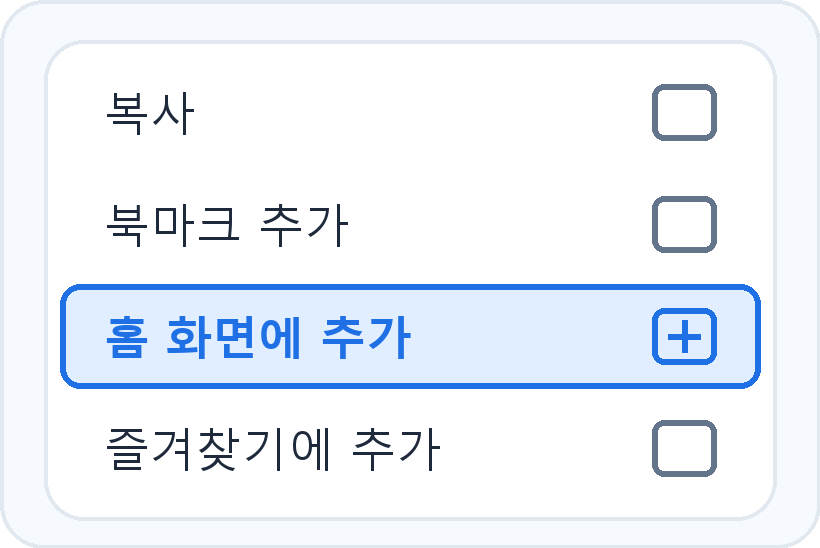
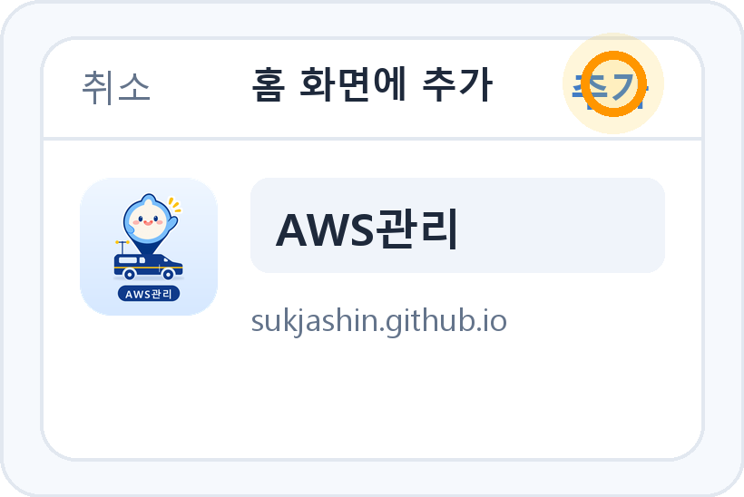

지금은 카카오톡 안에서 열려 있어요. 이 상태에서는 설치가 안 돼요.
화면 오른쪽 아래(또는 위) ⋮ / 더보기 → "다른 브라우저로 열기"를 눌러 Chrome(안드로이드) 또는 Safari(아이폰)로 열어주세요.
알아두세요 · 카카오톡에서 링크를 누르면 톡 안의 브라우저로 열려서 설치 버튼이 안 나와요.
꼭 Chrome(안드로이드) / Safari(아이폰)로 열어주세요. 위의 복사 버튼으로 주소를 복사해서 붙여넣어도 돼요.
삼성·LG·픽셀 등 안드로이드 폰은 Chrome으로 열어주세요.
-
1
Chrome으로 주소 열기
주소창에 위 주소를 입력하거나 링크를 눌러 접속합니다.

-
2
'홈 화면에 앱으로 설치' 누르기
화면 위쪽 파란 머리말의 설치 버튼을 누르세요. 안 보이면 Chrome 메뉴(⋮) → 앱 설치를 누릅니다.

-
3
'설치' 확인
팝업에서 설치를 누르면 홈 화면에 아이콘이 만들어져요.

아이폰은 반드시 Safari로 열어야 해요. (크롬·카톡 안 브라우저는 안 돼요)
-
1
Safari로 주소 열기
Safari 앱에서 주소를 열어주세요. 카카오톡 링크는 다른 브라우저로 열기 → Safari를 선택하세요.

-
2
아래쪽 공유 버튼 누르기
화면 맨 아래 가운데, 네모에 위 화살표 모양 버튼이에요.

-
3
'홈 화면에 추가' 고르기
공유 메뉴를 위로 올리면 보이는 홈 화면에 추가를 눌러요.

-
4
오른쪽 위 '추가' 누르기
이름(AWS관리 / 관측출장)을 확인하고 추가를 누르면 끝!

설치 완료! 이렇게 생겨요
이제 아이콘만 누르면 앱처럼 전체 화면으로 열려요.
아이콘이 예전 모양이면?
기존 아이콘을 삭제하고 위 순서로 다시 추가해 주세요. (아이폰은 추가하는 순간의 아이콘을 기억해요)